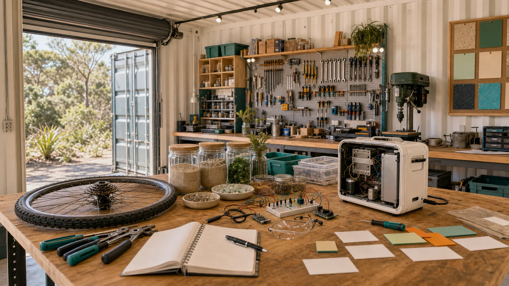

Repair cafe and right-to-repair
Start with the object in someone's hand: tighten it, open it, test it, name the fault, salvage the part, or decide honestly that it belongs in a specialist stream.
Bring the odd problem, the broken object, the half-idea, the material offcut, the skill someone wants to try, and leave the bench smarter than it was.

Each stream can begin as a small test with a visible record: what was tried, what worked, what failed, what surprised people, and what the next bolder version might need.
Start with the object in someone's hand: tighten it, open it, test it, name the fault, salvage the part, or decide honestly that it belongs in a specialist stream.
Treat a waste stream like a materials library: timber, tubs, bikes, cable, glass, metal, food containers, event gear, packaging and the story of where each thing came from.
Turn sand into a learning surface: compare grain, glass, ceramic, geopolymer, heat, colour, weight and risk without pretending a sample jar is a mining plan.
Design the room like a cockpit: every drawer earns its reach, every bench has a job, every tool can be found, borrowed, cleaned and locked away.
Make the experiment visible: a photo, a repair note, a short clip, a noticeboard card, a grant-evidence line, and a next invitation.
Play with the practical edges of clean energy: solar charging, sensors, battery storage, wave-energy models, water checks and emergency readiness.
The workforce theory works when the first slice is real. A person might try repair triage, material sorting, CAD sketching, camera setup, laser prep, tool labelling, bench setup, safety checks, public notes or a tiny clean-energy model before choosing where to grow.
Which first taste would make someone say, "I can help build this"?
Observe. See the tool, material, problem and safety issue before touching anything.
Try one slice. Do a small bounded action with help: label, sort, measure, clean, unscrew, photograph, sketch or test.
Record the next question. Leave the workbench smarter for the next person.
These starter builds are ordinary enough to begin, but each one opens a larger pathway.
Give every repair a trail: object, fault, tool, part, time, result, lesson and next move.
Let the room build itself from reclaimed timber, proving the circular logic before anyone writes the next pitch.
Make a tactile board people can touch, compare and question: quartz, glass, ceramics, geopolymers and heavy-mineral ideas.
Turn a public notice into a real bench session, then send the result back out as a thank-you, a photo and an invitation.
Build the inventory like a living map: useful now, dream tool, shared by request, needs training, grant target, future fabrication.
Walk the island's ordinary leftovers and ask which ones deserve a second life before they become a ferry problem.